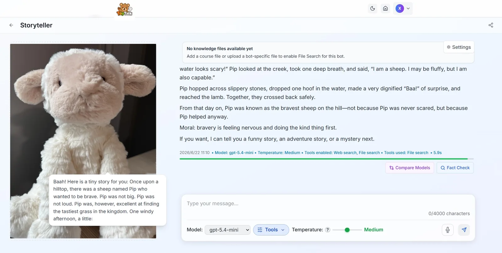
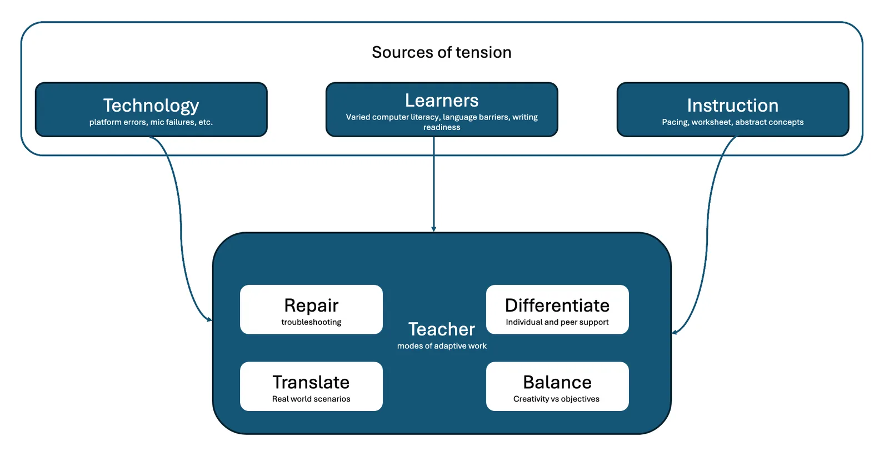
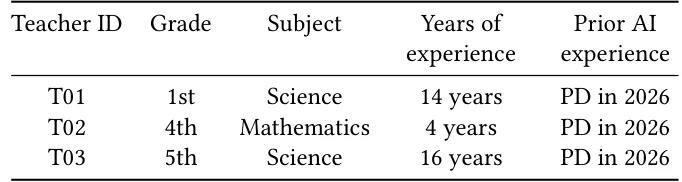

O problema: IA chega à escola, mas quem faz funcionar?
Ferramentas de IA conversacional estão chegando às escolas primárias. Distritos escolares querem adotá-las, desenvolvedores prometem engajamento e aprendizado, mas há um elo que raramente aparece nos papers: o professor. A maior parte da pesquisa em IA educacional mede o que a tecnologia faz pelos alunos — ganhos de aprendizado, engajamento, concepções sobre IA. Pouco se sabe sobre o que os professores precisam fazer para que essas ferramentas funcionem de verdade em sala de aula.
Este paper documenta três semanas de um acampamento de verão em 2026, no leste dos Estados Unidos, onde três professoras do ensino fundamental implementaram um currículo que mistura alfabetização em inglês (ELA) e conceitos de IA. A ferramenta central era ToyTalk, uma plataforma desenvolvida pela equipe de pesquisa que permite que crianças criem seus próprios chatbots personalizados a partir de fotos de brinquedos físicos.
O estudo não pergunta se a IA funciona. Pergunta como os professores fazem a IA funcionar. A resposta: através de um trabalho contínuo de adaptação, improvisação e negociação entre o que o currículo prescrevia, o que a tecnologia permitia e o que os alunos de 2ª e 3ª séries conseguiam fazer naquele momento. Os autores, liderados por Fasika Melese da Universidade da Pensilvânia, documentaram esse trabalho através de reflexões diárias individuais, sessões coletivas de debriefing e entrevistas pós-acampamento.
O contexto: alfabetização em IA para crianças de 7 e 8 anos
O acampamento aconteceu como parte de um programa de remediação de leitura para 78 estudantes de 2ª e 3ª séries de um distrito rural, com níveis de habilidade abaixo da série. A demografia do distrito: 36,5% brancos, 18,6% negros, 36,7% hispânicos/latinos, 1,6% asiáticos e 0,3% outros. Ou seja, uma população majoritariamente sub-representada e mal atendida.
As três professoras participantes tinham entre 4 e 16 anos de experiência, mas nenhuma era de ciência da computação. Duas ensinavam ciências, uma matemática. A única experiência prévia com IA vinha de sessões de desenvolvimento profissional realizadas em 2026, antes do acampamento. Elas não eram especialistas em IA; eram especialistas em crianças.
O currículo foi co-desenhado com especialistas em ciência da computação e ciências da aprendizagem. A progressão ao longo das três semanas ia de 'o que é IA' para 'como ela gera respostas', depois para 'criar e treinar seu próprio chatbot' e finalmente 'avaliar se as respostas são precisas ou confiáveis'. Cada semana construía sobre os artefatos da anterior, usando práticas familiares de ELA — descrição, narrativa, compreensão de leitura, discussão — como veículo para entender conceitos de IA.

Como o estudo foi feito: três fontes de dados sobre adaptação
O método é um estudo de caso qualitativo, apropriado para exploração de fenômenos novos e contextualizados. Os autores coletaram três tipos de dados ao longo dos 13 dias de instrução. Primeiro, reflexões individuais escritas diárias: cada professora preenchia um formulário Google ao final de cada dia, capturando raciocínio no calor do momento. Isso gerou em média 8 a 12 entradas por professora.
Segundo, sessões de debriefing em grupo: toda noite, as três professoras e a equipe de pesquisa se reuniam por 90 minutos via Zoom. Essas sessões eram baseadas nas reflexões individuais do dia e permitiam que as professoras levantassem problemas, propusessem modificações e discutissem o que havia acontecido. As gravações foram transcritas automaticamente pelo Zoom.
Terceiro, entrevistas pós-acampamento: após as três semanas, cada professora participou de uma entrevista semi-estruturada de 60 minutos, refletindo sobre a experiência completa, o que aprenderam sobre IA e sobre ensinar IA, e como sua compreensão de seu papel havia mudado. Essas entrevistas foram gravadas em áudio e transcritas.
A análise seguiu codificação temática em duas rodadas. Na primeira, dois pesquisadores codificaram independentemente uma amostra de dados, discutiram discrepâncias e refinaram o livro de códigos. Na segunda rodada, aplicaram os códigos ao conjunto completo de dados. O foco estava em identificar práticas adaptativas e as tensões que as motivavam.
O que as professoras fizeram: quatro práticas adaptativas
Os autores identificaram quatro modos de adaptação que as professoras usaram continuamente. Esses modos não são fases sequenciais, mas práticas sobrepostas que respondem a três tensões persistentes: tecnologia (a ferramenta não funciona como esperado), aprendizes (crianças com habilidades e necessidades heterogêneas) e instrução (objetivos curriculares versus agência criativa dos alunos).
Primeiro, reparo: resolver problemas técnicos. Microfones que não funcionavam, estudantes que não conseguiam fazer login, respostas inesperadas do chatbot. Uma professora descreveu passar metade da aula ajudando alunos individualmente com problemas de hardware. Outra mudou para atividades de backup quando a plataforma ficou instável. Isso não é falha das professoras; é trabalho humano suprindo a robustez que o sistema não tem.
Segundo, diferenciação: ajustar ritmo e modalidade para uma turma heterogênea. Dividir lições em vários dias quando as crianças precisavam de mais tempo. Transcrever para alunos que ainda lutavam com escrita. Facilitar tutoria entre pares quando alguns entendiam mais rápido. Uma professora relatou ler e corrigir os prompts dos alunos antes de enviá-los ao chatbot, antecipando erros de ortografia ou formulações confusas que gerariam respostas ruins.
Terceiro, tradução: tornar conceitos abstratos de IA digeríveis para crianças de 7 e 8 anos. Uma professora conectou 'alucinação' de IA à fábula do menino que gritava lobo, transformando um termo técnico em algo familiar. Outra enquadrou um erro de speech-to-text como uma lição sobre homófonos e sobre verificar o que a IA produz. Isso não é simplificação vazia; é ancoragem pedagógica.
Quarto, equilíbrio: negociar objetivos de aprendizado com a agência criativa dos alunos. Exemplo: os alunos primeiro desenharam o propósito de seus brinquedos livremente, mas depois foram redirecionados a fazer o chatbot contar a história 'A Lagarta Muito Faminta'. As professoras encontraram maneiras de preservar a identidade autoral dos alunos enquanto cumpriam metas instrucionais. Uma permitiu que alunos mantivessem seus temas originais, mas os guiou a conectá-los ao texto obrigatório.

Como o papel das professoras evoluiu: aprender junto com as crianças
Um achado central é que a compreensão das professoras sobre IA e sobre seu próprio papel mudou ao longo das três semanas. No início, elas se viam como executoras de um currículo. No final, se descreviam como 'aprendendo junto com as crianças' e co-construindo conhecimento sobre IA em tempo real.
As sessões coletivas de debriefing foram cruciais. As professoras levantavam problemas, propunham modificações e sentiam que eram 'ouvidas'. Isso não era apenas suporte emocional; era construção coletiva de sentido. Elas traziam forte expertise pedagógica e de conteúdo, e construíram compreensão tecnológica em tempo real. Isso espelha literatura sobre comunidades profissionais de prática e características de desenvolvimento profissional eficaz.
Uma professora disse: 'Eu não sabia o que era alucinação de IA até ver acontecer na frente dos meus alunos. Aí tive que explicar para eles e, explicando, entendi melhor.' Outra relatou que começou o acampamento ansiosa sobre não saber programação, mas terminou confiante de que seu conhecimento sobre como crianças aprendem era mais importante que conhecimento técnico.
Implicações de design: projetar para adaptação, não para prescrição
Se adaptação é o mecanismo de implementação, então currículos de IA e ferramentas voltadas para alunos devem ser projetados assumindo que professores vão adaptá-los. Os autores propõem três direções.
Primeiro, projetar para reparo. Assuma que a infraestrutura tecnológica da escola será instável. Forneça múltiplas modalidades (digital e analógica), backups offline, e documentação clara de solução de problemas. Uma professora sugeriu ter versões em papel de todas as atividades digitais, não como último recurso, mas como opção equivalente.
Segundo, projetar para tradução. Forneça múltiplas metáforas e analogias para conceitos de IA, não apenas uma. Deixe espaço para que professores conectem IA a textos, histórias e experiências que seus alunos já conhecem. Uma professora pediu um 'banco de analogias' que ela pudesse consultar quando precisasse explicar um conceito de forma diferente.
Terceiro, projetar para equilíbrio. Currículos devem ter objetivos claros, mas também flexibilidade estruturada. Indique o que é negociável e o que não é. Uma professora disse: 'Eu preciso saber o que é o núcleo duro da lição e o que posso ajustar sem comprometer o objetivo de aprendizado.'
O que o estudo não mostra: limitações e perguntas em aberto
Este é um estudo de caso com três professoras em um único distrito, durante três semanas de verão. Não é generalizável estatisticamente. O objetivo era exploração profunda, não representatividade ampla. As práticas adaptativas identificadas podem não se aplicar a outros contextos, outras ferramentas, outras idades.
O estudo não mede aprendizado dos alunos. Não sabemos se as adaptações das professoras resultaram em melhor compreensão de IA ou de ELA pelas crianças. Sabemos que as professoras trabalharam intensamente para fazer a tecnologia funcionar, mas não sabemos se esse trabalho valeu a pena em termos de resultados de aprendizado.
Também não sabemos quanto desse trabalho adaptativo é sustentável. Três semanas de verão, com suporte diário de uma equipe de pesquisa, é muito diferente de um ano letivo regular sem suporte. Uma professora disse: 'Não sei se conseguiria fazer isso sozinha, sem vocês para resolver problemas técnicos e sem as sessões noturnas para processar o dia.'
Finalmente, o estudo não compara diferentes abordagens. Não sabemos se um currículo mais prescritivo ou menos prescritivo teria sido melhor. Não sabemos se uma ferramenta mais robusta teria reduzido o trabalho de reparo ou se o reparo é inerente a qualquer tecnologia emergente em sala de aula.

Por que isso importa: tecnologia não se implementa sozinha
Este paper é uma contribuição empírica importante porque documenta o trabalho invisível que professores fazem para que IA educacional funcione. Desenvolvedores e pesquisadores frequentemente assumem que, se a tecnologia é boa o suficiente, ela será adotada. Este estudo mostra que adoção não é um interruptor binário; é um processo contínuo de adaptação.
Para a comunidade de educação em computação, o paper oferece um framework de quatro práticas adaptativas (reparo, diferenciação, tradução, equilíbrio) que pode guiar o design de futuras ferramentas e currículos. Para pesquisadores de interação humano-computador, mostra que co-orquestração humano-IA em educação não é apenas sobre dividir tarefas entre professor e sistema, mas sobre professores compensando continuamente as limitações do sistema.
O estudo também levanta uma questão ética: quanto trabalho adaptativo é razoável pedir aos professores? Se IA educacional requer esse nível de improvisação constante, ela está realmente ajudando ou apenas adicionando mais uma camada de trabalho emocional e cognitivo a uma profissão já sobrecarregada? Os autores não respondem essa pergunta, mas a tornam visível.
O que fica
- Três professoras implementaram currículo de IA conversacional por três semanas; sucesso dependeu de reparo técnico, diferenciação, tradução de conceitos e equilíbrio entre objetivos e agência dos alunos.
- Professoras operaram na interseção de três tensões: tecnologia imprevisível, aprendizes heterogêneos e objetivos instrucionais. Adaptação não foi exceção, foi o mecanismo central de implementação.
- Compreensão das professoras sobre IA evoluiu através de reflexão coletiva diária e aprendizado junto com alunos, não apenas através de treinamento prévio.
- Estudo não mede aprendizado dos alunos nem sustentabilidade do trabalho adaptativo ao longo de um ano letivo regular sem suporte intensivo de pesquisa.
Paper original: Adapting for AI: How elementary teachers adjust their practices for an AI-integrated curriculum
Comentários
Nenhum comentário ainda. Seja o primeiro.